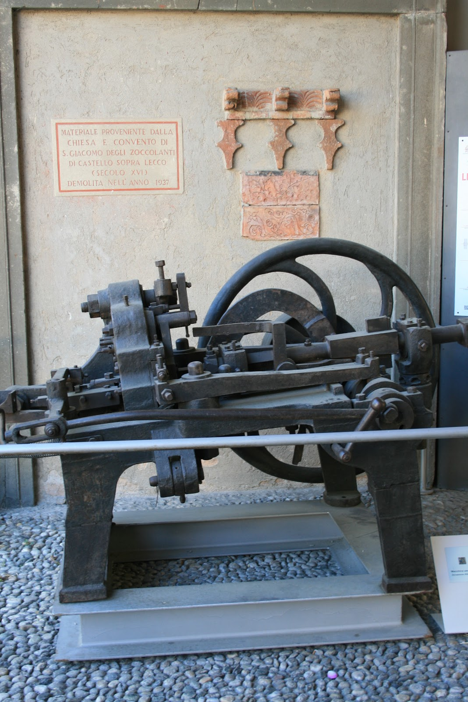

E poi più recentemente:
L’estrazione mineraria e l’attività metallurgica erano già presenti in Valsassina in epoca protostorica, cioè quella compreso tra la prima età del bronzo (prima metà del IV millennio a.C.) e quella del ferro (XII sec a.C.).
Attività di trafileria tra il 1380 e il 1397: già alla fine del ‘300 “la Fiumicella”, sopra Laorca, derivazione artificiale del torrente Gerenzone testimonia l’importanza per l’economia della città. L’attività della popolazione aveva saputo utilizzare l’acqua come forza motrice. Sia le acque del Gerenzone che di Fiumicella erano utilizzate dalle botteghe artigiane, delle fucine di Laorca, Rancio, San Giovanni, Castello.
Elenco dei prodotti principali della Vallata:
Dal '300 all’800 Lecco divenne un’importante area di produzione siderurgica e metallurgica tra le più famose d'Europa per la produzione di armi bianche, armature, coltelli e filo di ferro. Esempio: i fili di ferro che utilizzavano per le corde di strumenti musicali.
A inizio ‘800 le miniere della Valsassina cominciarono a scarseggiare e così venne abbandonata la siderurgia a favore della lavorazione della ghisa, rottami di ferro e semilavorati provenienti da altri stati italiani ed esteri. La diffusione di nuove fonti di energia (vapore ed elettricità) favorirono lo sviluppo a livello industriale della lavorazione del ferro. I primi ad adottare le nuove tecnologie furono Giuseppe Badoni ed Enrico Falck.
Nuovi elementi:
Tra il 1830 e il 1834 Giuseppe Badoni impiantò un laminatoio per profilati in località Arlenico in cui si lavorò per la prima volta la vergella di acciaio dolce. Nel 1840 venne installato un Opificio meccanico e metallurgico a Castello.
Nel 1874 il Laminatoio di Malavedo fu costuito da due famiglie di Laorca: Redaelli e Falck (padre e poi il figlio Giorgio Enrico). Nel 1896 le stesse instituirono l’anonima Ferriera del Caleotto. La nascita della società del Caleotto fu un passo fondamentale per la produzione industriale:
Il Caleotto agli inizi del '900 rappresentò il fulcro dell’organizzazione produttiva Lecchese con la produzione di vergella e il suo utilizzo da parte delle aziende specializzate nella produzione di chiodi, filo di ferro, reti metalliche.
La crisi siderurgica si avvertì anche a livello nazionale nel primo decennio del ‘900.
Allo scoppio della guerra tutti i settori dell’industria del ferro risposero alle richieste dei mezzi bellici.
Si vendevano all’esercito:
Macchina per chiodi di scarpe (Palazzo Belgioioso - Lecco)
Nonostante la crisi post-bellica a causa della mancanza di combustibile e di rottami, l’incremento della produzione proseguì e resistette in virtù del suo consolidato sistema produttivo. Seguirono periodi in cui si verificarono forti oscillazioni di risultati positivi e negativi nonostante gli ammodernamenti tecnologici degli anni ‘70 (esempio: Acciaieria elettrica per acciaio al carbonio) dell’Arlenico. Nel 1981 anno di crisi, l'area del Caleotto fu messa in vendita.
Nel 1991 venne abolita la torre cisterna del Caleotto, considerata uno dei simboli dell’industria Lecchese. All’Arlenico rimasero attivi il forno elettrico e il forno a spinta.
{kind=link}
{kind=link}
{kind=link}